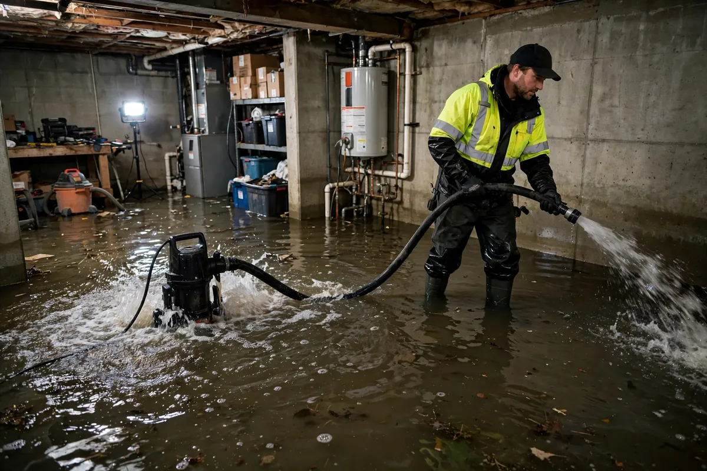

Basement Flood Cleanup in Hollywood, FL
Below-grade spaces flood differently. Water comes through foundation walls, up through slab cracks under hydrostatic pressure, or in from failed sump pumps and overwhelmed drains — and once it's in, concrete and block hold onto it. Basement flood cleanup in Hollywood, FL is about thorough extraction, drying masonry that releases moisture slowly, and making honest calls about which finished materials down there can be saved.

Understanding Basement Flood Cleanup in Hollywood
Hollywood's high water table means below-grade and low-lying spaces are vulnerable during heavy rain events, even without a dramatic storm. Water takes the path of least resistance: wall-floor joints, cracks in the slab, window wells, and penetrations where pipes enter. Finished basements add drywall, carpet, and insulation to the mix — all of which wick water upward and hold it. The first question on every job is how the water got in, because extraction without addressing the entry path just sets up a repeat.
Concrete looks indestructible but it's porous — it absorbs water and gives it back slowly, which is why basement drying takes longer than above-grade rooms. Efflorescence, the white mineral deposit on walls, signals chronic moisture rather than just this event. Stored belongings are often the biggest casualty: boxes on the floor wick water in minutes. Content triage — what can be dried, what has to go — is a major part of the work down here.
How We Handle the Job
We extract standing water first, using pumps or weighted extraction tools suited to concrete floors. Then moisture is mapped across walls and slab, with readings taken at multiple heights on walls because wicking climbs. Wet drywall is typically cut at the flood line plus a margin, and saturated insulation behind it is removed. Air movers and dehumidifiers run in a closed system — no open windows, since outside humidity would feed the problem — and dehumidification does the heavy lifting on masonry.
Concrete dries slowly, so equipment stays until meter readings confirm the slab and walls have returned to their dry standard — pulling gear early is the most common reason basements smell musty months later. Finished materials are evaluated honestly: carpet pad is almost never salvageable, while drywall above the cut line can often stay. Related services such as emergency water extraction, structural drying, and flood cleanup often connect to the same loss depending on conditions on site.
Local Response and Insurance Support
Searching for basement flood cleanup near me usually means you need help without delay. We answer emergency calls around the clock. Documentation — photos and moisture readings — supports conversations with your insurance carrier when the loss is sudden and accidental. We do not decide coverage; we provide clear technical information about the work performed.
When to Call
Call if you have active water, wet materials that are not drying, odors after a leak, or a backup that may involve contaminated water. Early action in Hollywood’s climate is almost always less disruptive than waiting. For neighborhood-specific service, see our service areas. For the full list of capabilities, visit all services.
Frequently Asked Questions
Why does my basement keep flooding in the same spot?
Recurring flooding in one location usually points to an entry path — grading that slopes toward the foundation, a wall-floor joint gap, a failed sump pump, or a window well that collects water. Cleanup handles this event, but a lasting fix like regrading, sealing, or a working sump with battery backup is what prevents the next one. We note the likely entry point in our documentation.
Can the carpet in my finished basement be saved?
Wall-to-wall carpet can sometimes be extracted and dried, but the padding underneath almost always has to go — it traps water and contaminants and doesn't dry cleanly. If the water was anything other than clean supply-line water, replacing both carpet and pad is the safer call.
How long does basement drying take?
Longer than above-grade rooms, because concrete and block release moisture slowly. A straightforward clean-water basement flood often needs several days of continuous dehumidification; finished basements with removed drywall and insulation take longer. Moisture meter readings, not the calendar, determine when equipment comes out.
What should I do with everything stored down there?
Move dry items to a dry area immediately. Anything that sat in water needs triage: hard, non-porous items can usually be cleaned, but cardboard boxes, upholstered furniture, and anything that wicked contaminated water should generally be discarded. Don't stack wet boxes — they'll grow mold from the inside out.